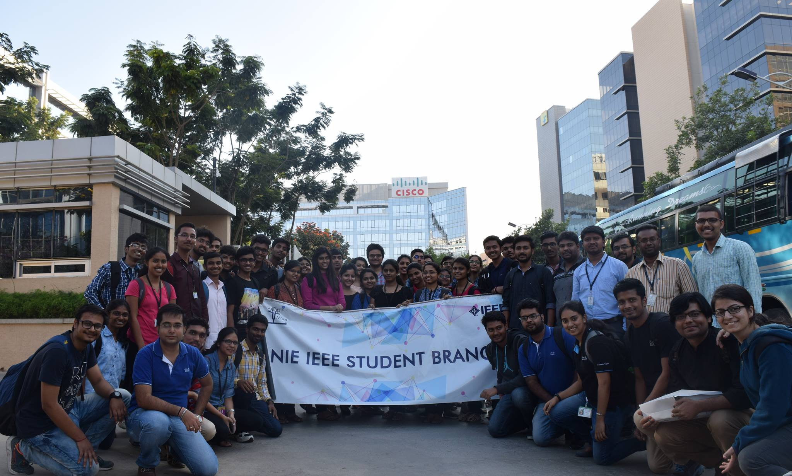
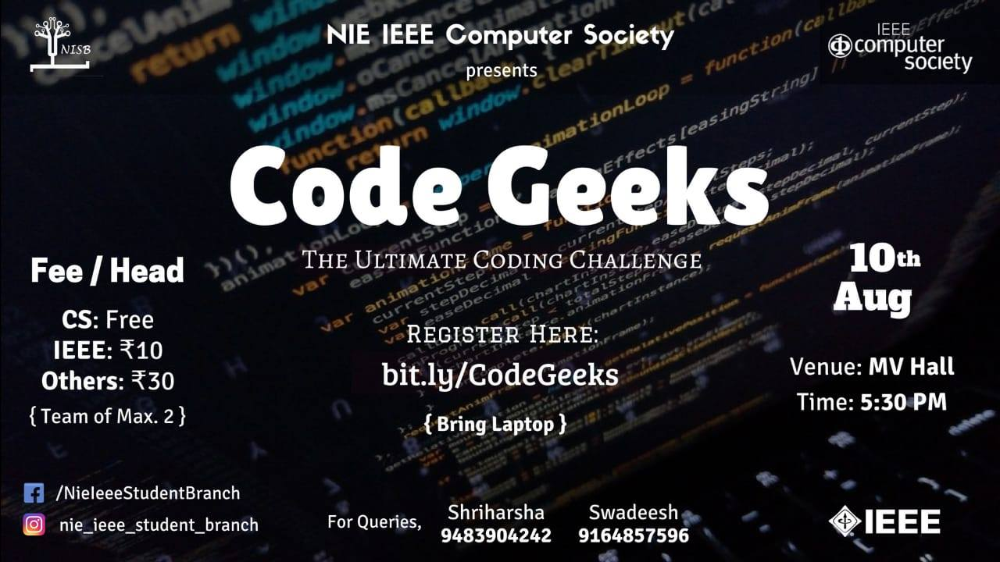
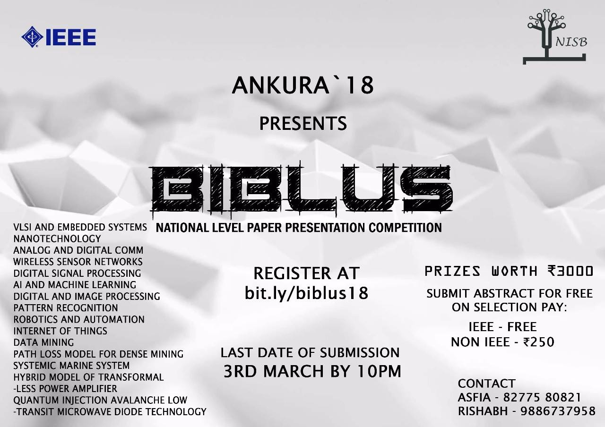

About

NISB is the IEEE student branch of National Institute of Engineering.
It is one of the largest and most active student branches of Karnataka.
Having been active for a decade, we have been honoured and humbled with numerous awards and accolades over time, including "The Best Student Chapter"
of Region 10 Bangalore. We organize and host a wide range of technical workshops and events. We have our odd sem fest ADROIT and even sem fest ANKURA.
Electronika , IPL are few our signature events.
Events


Contact
Chapters
NIE IEEE Computer Society
IEEE has many societies under its umbrella. One of its largest and most active societies is the IEEE Computer Society. NISB has started its Computer Society chapter two years ago with only 15 members and currently has a whopping a figure of 60 members. Through NISB, IEEE students of NIE can take up student membership for the Computer Society
Women in Engineering
IEEE Women in Engineering (WIE) is one of the largest international professional organization dedicated to promoting women engineers and scientists and inspiring girls around the world to follow their academic interests to a career in engineering. The IEEE Women in Engineering Student Branch Affinity Group at the National Institute of Engineering was formed on 13th April 2015